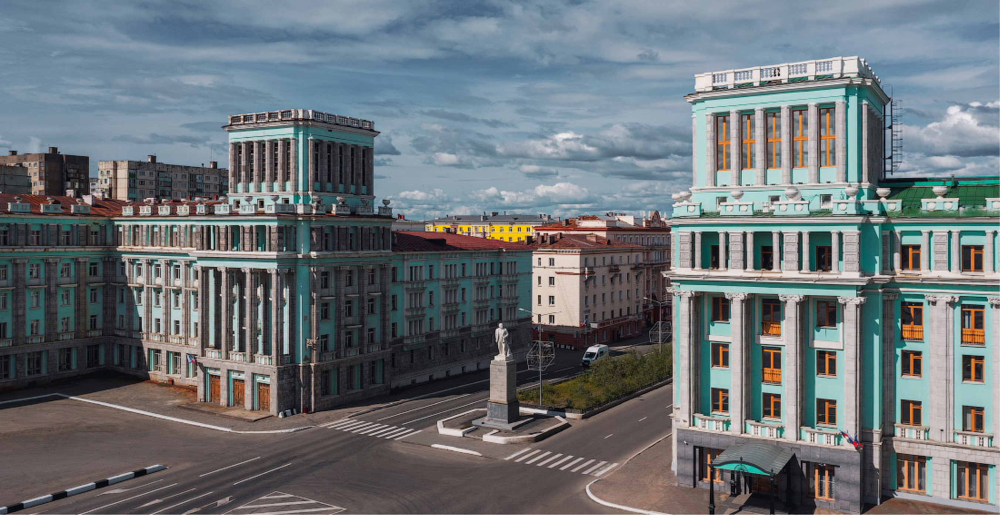
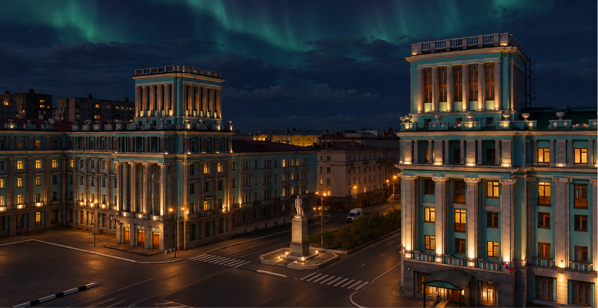
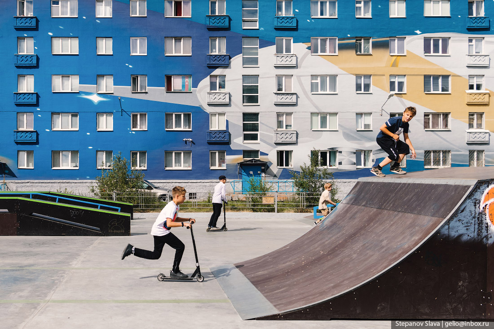
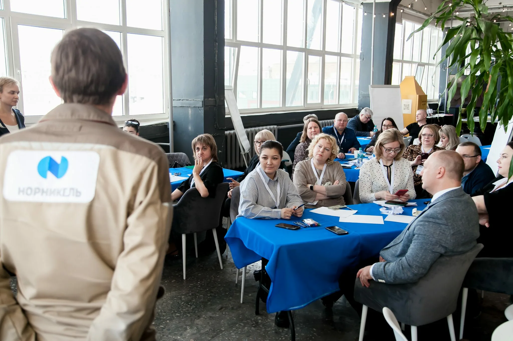
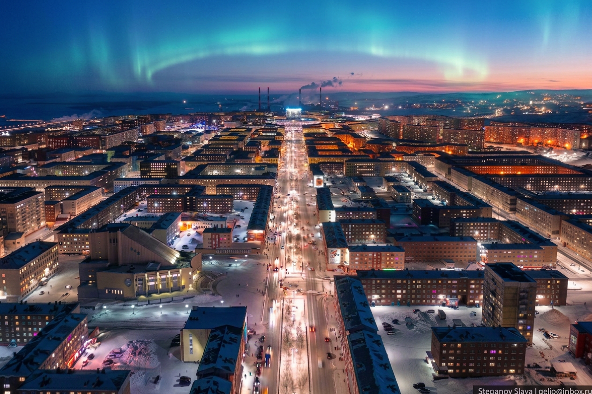
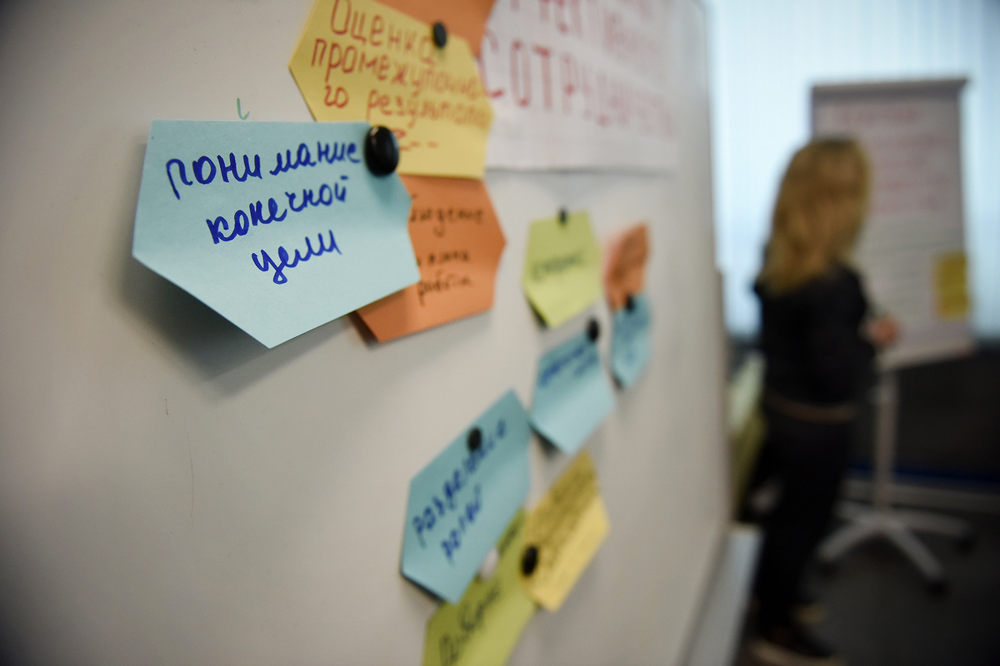
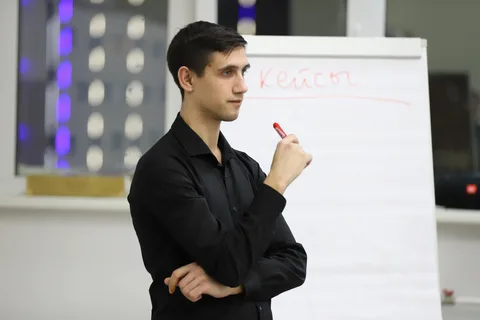
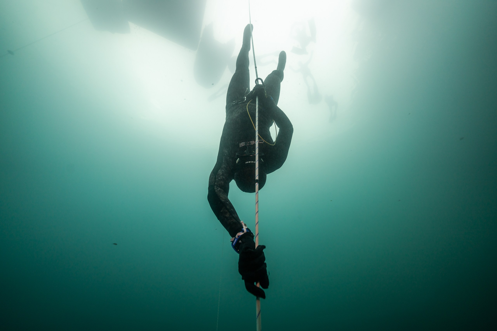
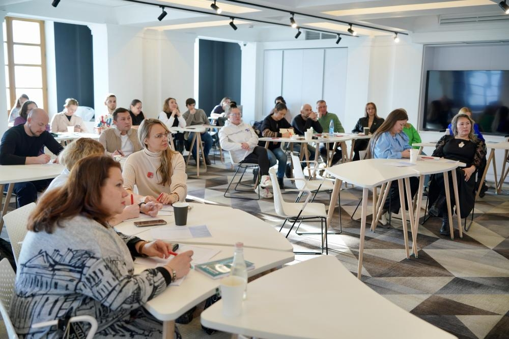
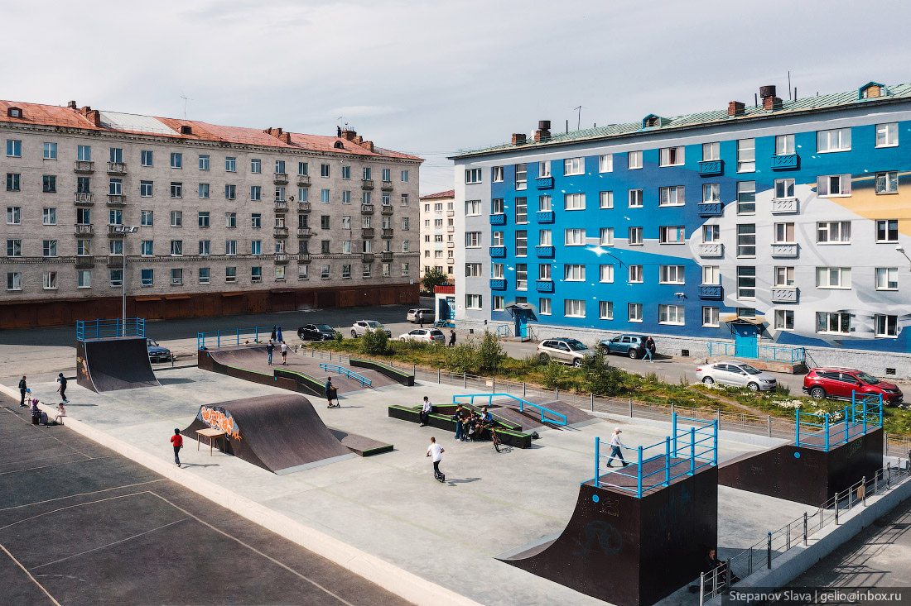

01
Смотреть200+
Реализованных проектов
Норильск · 69°20′ с. ш. · 88°13′ в. д. · 2016—2026
Визионеры Арктики
Развиваем общественные пространства, поддерживаем местный бизнес и запускаем городские проекты
Посмотреть проекты

01
Смотреть200+
Реализованных проектов
02
Смотреть117
Общественных пространств
03
Смотреть54
Образовательные программы
04
Смотреть80
Инфраструктурных проектов
С 2016 года мы создаём новые стандарты формирования комфортной городской среды, отвечая на актуальные запросы общества и уважая традиции. Объединяем усилия жителей, власти и бизнеса, чтобы превращать идеи в реальные изменения.
Подробнее об агентстве
Обновление · 2025
В 2025 году АРН обновило скейт-парк у Молодёжного центра. Площадку отреставрировали и оформили в цветах городского бренда Норильска.
Подробнее о проектеХронология · листайте годы
Директор АРН
Заместитель директора по инвестициям
Первый заместитель директора АРН
Заместитель директора

С 2020 года
Программа «Обучение городских команд и развитие сервисов»

Норильск · 69°20′ с. ш. · 88°13′ в. д. · 2016—2026

18:00 – 19:30
Креативное пространство АРН
Бесплатно11:30 – 14:00
Креативное пространство АРН
Билет 500 ₽
18:00 – 19:30
Креативное пространство АРН
Регистрация завершенаПо этой теме пока нет мероприятий.

В бассейне дворца спорта «Арктика» в Норильске прошли третьи соревнования «Фридайвинг за 69-й параллелью».
Приглашаем участников туристско-рекреационного кластера «Арктический» и представителей малого и среднего бизнеса Норильска на рабочую встречу.

В Норильске стало ещё больше качественных и интересных предложений для туристов — это результат интенсива «Архитекторы туризма».
По этой теме пока нет новостей.

Мы будем рады услышать ваши предложения. Делитесь своими идеями и становитесь частью сообщества перемен!